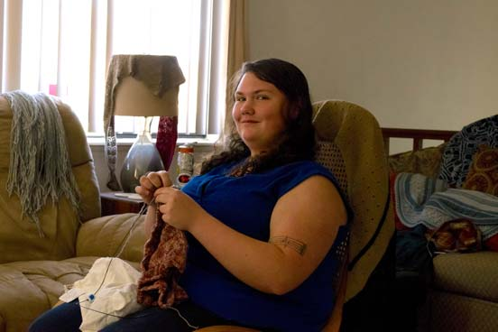
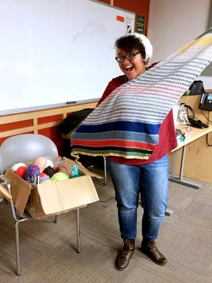

Founder: Tasha Reed
Tasha is a Junior Music Education Major at CSU from Fort Collins, CO. She has been an avid knitted since learned how in high school. There is no fascinating story as to why she started knitting, she just decided to learn one and she ended up loving the hobby. She is willing to teach anyone willing to learn, even her mother, who pocked up on the craft after seeing how much her daughter loved it. She and her friend, Rae, knit together all the time and were looking to join the CSU knitting club, but upon looking for it they discovered that one did not exist so, like any good knitter would, they decided to start their own. And it has been one of the greatest experiences of her college career, because she gets to share her all time favorite hobby with those who already do and those who will love it. Long after she has left CSU and the knit and crochet club, you can find her knitting away on her chosen project any night of the week.
Co-Founder: Whitney (Rae) Marsh
Hello everyone, I’m Rae and I am the first oh so amazing financial office/ liaison. I am a 3rd year at CSU and am studying Political Science and law. I’ve been crocheting since the 8th grade and knitting since January of 2017. I am obsessed with Criminal Minds, Spiderman, Demi Lovato, and Sunflower seeds. There’s not much else, till the next time. 😊